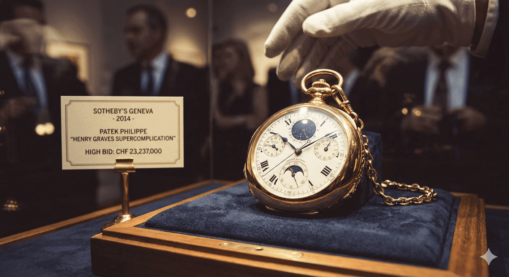

V ríši luxusných hodiniek existuje mnoho vzácnych kúskov, no len jeden nesie titul „najkomplikovanejšie hodinky vyrobené ľudskou rukou bez pomoci počítačov“. Patek Philippe Henry Graves Supercomplication nie sú len hodinky; sú mechanickým vesmírom ukrytým v puzdre zo žltého zlata a symbolom rivality, ktorá posunula hranice hodinárstva.
Ich príbeh nie je len o čase, ale o posadnutosti, obrovskom egu a miliardárskych vojnách. Všetko to začalo v roku 1925. Newyorský bankár Henry Graves Jr., vášnivý zberateľ, chcel prekonať svojho rivala, automobilového magnáta Jamesa Ward Packarda. Jeho cieľ bol jasný: vlastniť najzložitejšie hodinky na svete.

Vývoj a výroba trvali neuveriteľných 8 rokov. Od prvého návrhu až po finálny produkt prešlo toto dielo rukami najlepších majstrov svojej doby. V čase dokončenia v roku 1933 boli tieto hodinky najkomplikovanejšími mechanickými hodinkami na svete – titul, ktorý si držali viac než polstoročie.
Graves za ne vtedy zaplatil 15 000 dolárov (v dnešnej hodnote približne 300 000 USD), čo bola v čase hospodárskej krízy astronomická suma.
Prekliatie zlatého stroja?
Hovorí sa, že Graves mal po doručení hodiniek strach. Krátko po ich prevzatí zasiahlo jeho rodinu niekoľko tragédií a on začal veriť, že hodinky prinášajú smolu. Traduje sa, že raz počas plavby na jachte ich takmer hodil do jazera, no jeho dcéra ho v poslednej chvíli zastavila.
24 funkcií v jednom stroji
To, čo robí tieto hodinky „superkomplikovanými“, je ich neuveriteľných 24 funkcií. Okrem bežného času obsahujú:
- Hviezdna mapa: Verné zobrazenie nočnej oblohy nad New Yorkom, presne tak, ako ju videl Graves zo svojho bytu na Fifth Avenue.
- Westminsterská odbíjacia sekvencia: Hodinky odbíjajú rovnakú melódiu ako slávny Big Ben v Londýne.
- Večný kalendár: Mechanizmus, ktorý sám vie, kedy je priestupný rok.
- Čas východu a západu slnka: Presne kalibrovaný pre zemepisnú šírku New Yorku.
Všetkých 920 súčiastok spolupracuje v dokonalej harmónii bez jediného mikročipu či batérie.
Rekordy, ktoré vyrážajú dych
Hodinky Henry Graves Supercomplication dvakrát prepísali dejiny aukcií:
V roku 1999 sa predali za 11 miliónov dolárov. V roku 2014 sa suma vyšplhala na neuveriteľných 24 miliónov dolárov (cca 22,5 milióna eur). Pre porovnanie – za túto sumu by ste si mohli kúpiť flotilu súkromných lietadiel alebo menší ostrov.
Prečo sú pre zberateľa ikonické?
Pre komunitu zberateľov predstavujú tieto hodinky „konečnú stanicu“. Sú dôkazom éry, kedy hranice možného neurčoval softvér, ale trpezlivosť a majstrovstvo ľudských rúk. Vlastniť ich znamená dotýkať sa samotného vrcholu ľudského umu.
„Tieto hodinky nie sú len nástrojom na meranie času. Sú svedectvom o ambíciách človeka a o tom, že krása a komplexnosť môžu pretrvať stáročia.“
In the realm of luxury watches, many rare pieces exist, but only one holds the title of the “most complicated watch ever made by human hand without the aid of computers.” The Patek Philippe Henry Graves Supercomplication is more than just a timepiece; it is a mechanical universe encased in yellow gold and a symbol of a rivalry that pushed the boundaries of horology.
Its story is not just about time, but about obsession, massive egos, and billionaire wars. It all began in 1925. Henry Graves Jr., a New York banker and passionate collector, wanted to outdo his rival, the automobile tycoon James Ward Packard. His goal was clear: to own the most complex watch in the world.
Development and production took an incredible 8 years. From the initial design to the final product, this masterpiece passed through the hands of the greatest craftsmen of their time. Upon its completion in 1933, it became the most complicated mechanical watch on Earth—a title it held for over half a century.
At the time, Graves paid $15,000 for it (roughly $300,000 in today's value), which was an astronomical sum during the Great Depression.
The Curse of the Golden Machine?
It is said that Graves felt a sense of dread after the watch was delivered. Shortly after receiving it, his family was struck by several tragedies, leading him to believe the watch brought bad luck. Legend has it that during a trip on his yacht, he nearly threw the watch into the lake, only for his daughter to stop him at the very last moment.
24 Functions in a Single Mechanism
What makes this watch “Supercomplicated” are its 24 horological functions (complications). Beyond standard timekeeping, it includes:
- Celestial Chart: A faithful depiction of the night sky over New York City, exactly as Graves saw it from his apartment on Fifth Avenue.
- Westminster Chimes: The watch chimes the same melody as the famous Big Ben in London.
- Perpetual Calendar: A mechanism that automatically accounts for the length of months and leap years.
- Sunrise and Sunset Times: Precisely calibrated for the latitude of New York.
All 920 individual parts work in perfect harmony without a single microchip or battery.
Record-Breaking History
The Henry Graves Supercomplication has rewritten auction history twice:
In 1999, it sold at Sotheby’s for $11 million. In 2014, the price soared to a staggering $24 million (approx. €22.5 million). To put that in perspective—for that amount, you could have bought a fleet of private jets or a small island.
Why is it an Icon for Collectors?
For the collecting community, this watch represents the “end of the line.” It is a testament to an era where the limits of the possible were defined not by software, but by the patience and mastery of human hands.
“This watch is not just a tool for measuring time. It is a testament to human ambition and proof that beauty and complexity can endure for centuries.”
Im Reich der Luxusuhren gibt es viele seltene Stücke, doch nur eines trägt den Titel „die komplizierteste Uhr, die je von Menschenhand ohne Computerhilfe hergestellt wurde“. Die Patek Philippe Henry Graves Supercomplication ist mehr als nur ein Zeitmesser; sie ist ein mechanisches Universum in einem Gehäuse aus Gelbgold und ein Symbol für eine Rivalität, die die Grenzen der Uhrmacherkunst verschob.
Ihre Geschichte handelt nicht nur von der Zeit, sondern von Besessenheit, gigantischen Egos und Kriegen unter Milliardären. Alles begann im Jahr 1925. Henry Graves Jr., ein New Yorker Bankier und leidenschaftlicher Sammler, wollte seinen Rivalen, den Automobilmagnaten James Ward Packard, übertrumpfen. Sein Ziel war klar: die komplexeste Uhr der Welt zu besitzen.
Die Entwicklung und Herstellung dauerten unglaubliche 8 Jahre. Vom ersten Entwurf bis zum fertigen Produkt ging dieses Meisterwerk durch die Hände der besten Handwerker ihrer Zeit. Bei ihrer Fertigstellung im Jahr 1933 war sie die komplizierteste mechanische Uhr der Erde – ein Titel, den sie über ein halbes Jahrhundert lang hielt.
Damals bezahlte Graves 15.000 Dollar dafür (heute etwa 300.000 USD), was zur Zeit der Weltwirtschaftskrise eine astronomische Summe war.
Der Fluch der goldenen Maschine?
Es heißt, Graves habe nach der Auslieferung der Uhr ein Gefühl der Angst verspürt. Kurz nach Erhalt wurde seine Familie von mehreren Tragödien heimgesucht, was ihn zu dem Glauben veranlasste, die Uhr bringe Unglück. Die Legende besagt, dass er während einer Fahrt auf seiner Yacht die Uhr fast in den See geworfen hätte, wäre er nicht im letzten Moment von seiner Tochter aufgehalten worden.
24 Funktionen in einem einzigen Mechanismus
Was diese Uhr „superkompliziert“ macht, sind ihre 24 horologischen Funktionen (Komplikationen). Über die Standardzeitanzeige hinaus bietet sie:
- Sternenkarte: Eine originalgetreue Darstellung des Nachthimmels über New York City, genau so, wie Graves ihn von seiner Wohnung an der Fifth Avenue sah.
- Westminster-Schlagwerk: Die Uhr schlägt dieselbe Melodie wie der berühmte Big Ben in London.
- Ewiger Kalender: Ein Mechanismus, der die Monatslängen und Schaltjahre automatisch berücksichtigt.
- Sonnenaufgangs- und Sonnenuntergangszeiten: Präzise kalibriert auf den Breitengrad von New York.
Alle 920 Einzelteile arbeiten in perfekter Harmonie zusammen, ganz ohne Mikrochip oder Batterie.
Rekorde, die Geschichte schrieben
Die Henry Graves Supercomplication hat die Auktionsgeschichte gleich zweimal umgeschrieben:
Im Jahr 1999 wurde sie bei Sotheby’s für 11 Millionen Dollar verkauft. Im Jahr 2014 stieg der Preis auf unglaubliche 24 Millionen Dollar (ca. 22,5 Millionen Euro). Um das ins Verhältnis zu setzen: Für diesen Betrag hätte man eine Flotte von Privatjets oder eine kleine Insel kaufen können.
Warum ist sie eine Ikone für Sammler?
Für die Sammlerwelt stellt diese Uhr die „Endstation“ dar. Sie ist ein Zeugnis einer Ära, in der die Grenzen des Möglichen nicht durch Software, sondern durch die Geduld und Meisterschaft menschlicher Hände definiert wurden.
„Diese Uhr ist nicht nur ein Werkzeug zur Zeitmessung. Sie ist ein Beweis für menschlichen Ehrgeiz und der Beleg dafür, dass Schönheit und Komplexität Jahrhunderte überdauern können.“